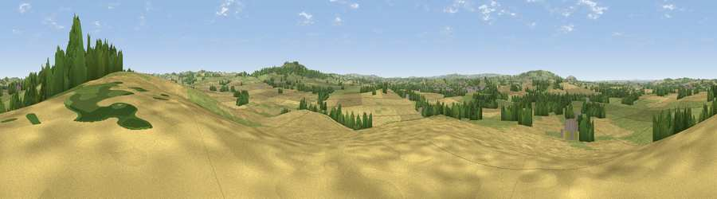

Viewpoint near Honington
#23480 in England · top 47% of its area beats it · near HoningtonWhere it is
The exact computed spot (SP 27475 42325). Click the marker for map links.
The view, rendered

A 360° render of this exact spot computed from the terrain model, tree cover and land cover — summer colours, afternoon light, calibrated against photographs of famous viewpoints. Real trees, hedges and buildings will differ in detail.
The panorama
Grey silhouette: terrain skyline in each direction (720 bearings, Earth curvature and refraction included). Dashed green: skyline with trees (+15 m) and buildings (+8 m) as obstacles. Blue strip: how far the ground is visible on each bearing.
Where the view opens
Wedge length = distance to the farthest visible ground on that bearing (vegetation-aware). Rings at 10, 25 and 50 km.
What fills the view
51% cropland · 38% grassland · 9% woodland · 2% built-up
Angular shares of the visible panorama (visual magnitude), not map area. Landscape diversity 0.44 (0–1 Shannon).
Key numbers
More beautiful places nearby
The staircase of upgrades: each row has a higher view potential than everything closer. Driving times are estimates from straight-line distance, calibrated against real road routing — check an actual route before setting out.
| Place | Direction | Drive | Score |
|---|---|---|---|
| Viewpoint near Upper Brailes | SE · 3 km | ~8 min | 60.0 |
| Viewpoint near Upper Brailes | SSE · 4 km | ~9 min | 68.5 |
| Viewpoint near Upper Tysoe | E · 6 km | ~13 min | 70.4 |
| Viewpoint near Ilmington | W · 7 km | ~14 min | 72.6 |
| Viewpoint near Meon Vale | WNW · 10 km | ~20 min | 77.0 |
| Broadway Hill | WSW · 17 km | ~30 min | 77.7 |
| Viewpoint near Elmley Castle | W · 30 km | ~47 min | 80.5 |
| Bredon Hill | W · 32 km | ~49 min | 83.0 |
52.07861, -1.60051 · source: screening · position refined by local search. Computed location — check access rights before visiting.